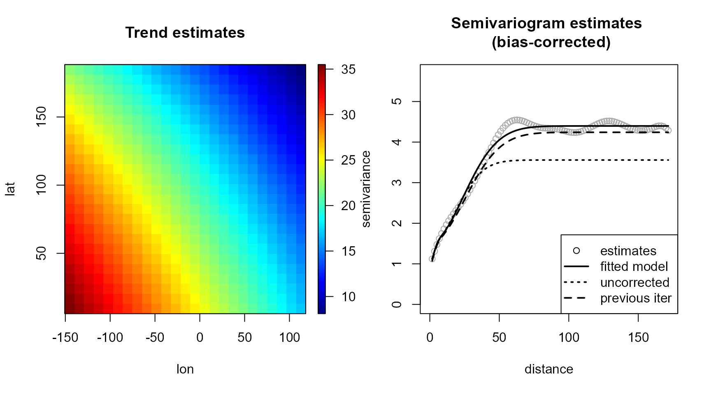
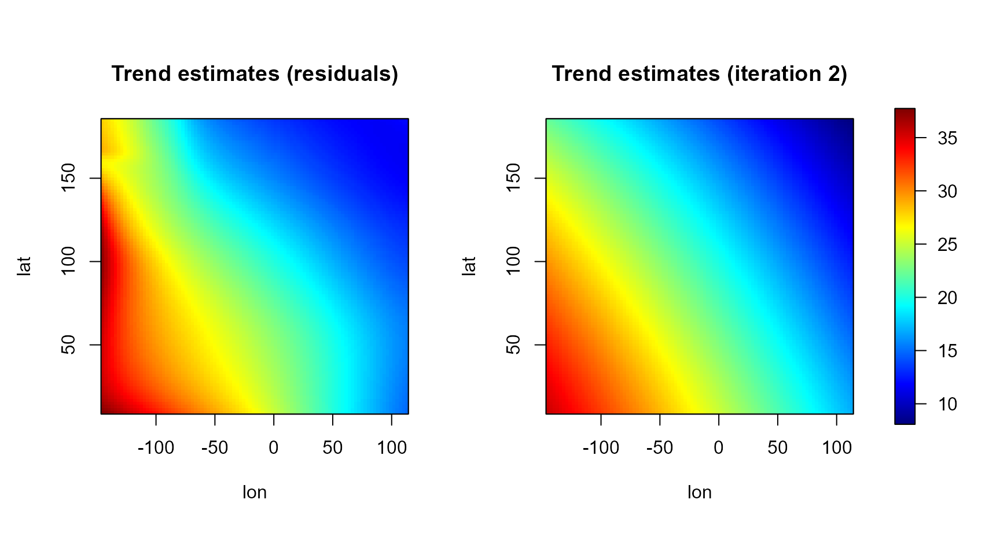
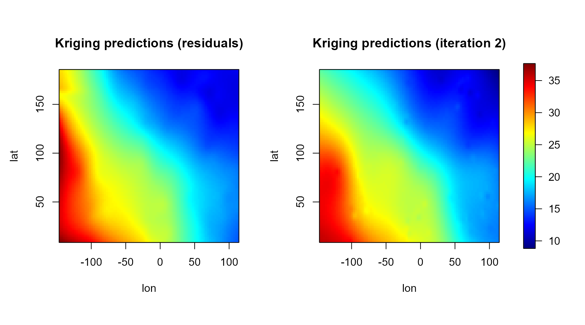

Geoestadistica no parametrica con el paquete npsp
Ruben Fernandez-Casal (ruben.fcasal@udc.es)
npsp 0.7.14
Source:vignettes/docs/aquifer.Rmd
aquifer.Rmd Package npsp: Nonparametric Spatial Statistics,
version 0.7-14 (built on 2024-07-09).
Copyright (C) R. Fernandez-Casal 2012-2024.
Type `help(npsp)` for an overview of the package or
visit https://rubenfcasal.github.io/npsp.GeoestadÃstica no paramétrica
Nos centraremos en el caso de procesos espaciales , con dominio continuo fijo: proceso geoestadÃstico.
- El objetivo en el futuro es considerar procesos puntuales marcados: es un proceso puntual en
Normalmente sólo se observa un conjunto de valores (realización parcial).
Ejemplo
Se utilizará como ejemplo el conjunto de datos aquifer:
nivel del agua subterránea en el acuÃfero Wolfcamp.
str(aquifer)'data.frame': 85 obs. of 3 variables:
$ lon : num 42.78 -27.4 -1.16 -18.62 96.47 ...
$ lat : num 127.6 90.8 84.9 76.5 64.6 ...
$ head: num 1464 2553 2158 2455 1756 ...Modelo general
Se supone que el proceso se descompone en variabilidad de gran escala y variabilidad de pequeña escala: donde:
es la tendencia (función determinÃstica).
es un proceso de error estacionario de segundo orden, de media cero y covariograma: (varianza ).
La dependencia espacial se modela normalmente a través del variograma: verificando .
Se empleará un modelo no paramétrico: no se supone ninguna forma concreta para y (funciones suaves).
Evitan problemas debidos a una mala especificación del modelo.
Más fáciles de automatizar.
Resultan también de utilidad en inferencia paramétrica.
Ejemplo
Con el conjunto de datos de ejemplo puede ser preferible emplear métodos paramétricos. El tamaño muestral es pequeño y un modelo lineal para la tendencia parece ser adecuado.
x <- aquifer[,1:2] # coordenadas espaciales
y <- aquifer$head/100 # respuesta (en cientos de pies)
scattersplot(x, y, main = "Wolfcamp aquifer data", xlab = 'lon', ylab ='lat',
zlab = 'piezometric-head', col = jet.colors(128))
Inferencia (no paramétrica) en procesos geoestadÃsticos
A partir de los valores observados puede interesar:
Obtener predicciones (kriging): .
Realizar inferencias (estimación, contrastes) sobre las componentes del modelo , .
Obtención de mapas de riesgo
…
Aunque hay una gran cantidad de paquetes de R con herramientas de
utilidad en geoestadÃstica (geoR, gstat,
fields, …) o en estadÃstica no paramétrica
(mgcv, KernSmooth, sm, …), la
mayorÃa presentan una funcionalidad muy limitada para estadÃstica
espacial no paramétrica o resulta difÃcil emplearlos para implementar
nuevos métodos (además de otras limitaciones, como su eficiencia
computacional o el número de dimensiones que soportan). Por este motivo
se decidió desarrollar el paquete npsp:
La idea serÃa:
Proporcionar un entorno homogéneo para la estimación polinómica lócal multidimensional (tendencia, variograma, densidad, …), especialmente para el caso de procesos espaciales (y espacio-temporales).
Trata de minimizar el tiempo de computación y los requerimientos de memoria.
Emplear clases y métodos S3 sencillos (que permitan interactuar con las clases S4 del paquete
spy las nuevas S3 del paquetesf; vernpsp/inst/locpol_classes.pdf).Robusto y que facilite la implementación de nuevos métodos.
Binning lineal
Para acelerar los cálculos se emplea binning (WARPing; e.g. Wand and Jones, 1995):
- datos discretización suavizado interpolación
Normalmente el resultado final del análisis es una rejilla y el último paso sólo interesa en cálculos intermedios (e.g. obtención de residuos).
Discretización
En la estimación polinómica local se emplea binning lineal.
- Wand M.P. and Jones M.C. (1995) Kernel Smoothing. Chapman and Hall.
Las principales funciones son:
Normalmente se emplearan dos rejillas, una de baja resolución para acelerar los cálculos durante el proceso de modelado (selección de la ventana, cálculos intermedios, …) y otra con la resolución deseada para obtener los resultados finales.
cpu.time(reset=TRUE)CPU time has been initialized.
bin <- binning(x, y, nbin = c(41,41), set.NA = TRUE)
simage(bin, main = 'Binning averages')
# Data points
points(bin$data$x, col = 'darkgray')
# Binning grid
coordvs <- coordvalues(bin)
abline(v = coordvs[[1]], lty = 3)
abline(h = coordvs[[2]], lty = 3)
cpu.time(total = FALSE)Time of last operation:
user system elapsed
0.00 0.00 0.01 Estimación de la densidad
La estimación de la densidad está implementada como un caso particular de regresión (se suavizan los pesos binning reescalados):
Por defecto emplea el estimador lineal local (establecer
degree = 0 para Nadaraya-Watson).
den <- np.den(bin, h = diag(60, 2), degree = 0)
# alternatively, set h = h.cv(as.bin.den(bin))$h
plot(den, main = 'Estimated log(density)')
Se puede emplear por ejemplo para establecer una máscara que filtre las posiciones alejadas de los datos.
List of 5
$ biny: num [1:41, 1:41] NA NA NA NA NA NA 35.1 35.1 NA NA ...
$ binw: num [1:41, 1:41] 0 0 0 0 0 ...
$ grid:List of 6
..$ nd : int 2
..$ n : int [1:2] 41 41
..$ min : num [1:2] -145.24 9.41
..$ max : num [1:2] 113 185
..$ lag : num [1:2] 6.45 4.38
..$ dimnames: chr [1:2] "lon" "lat"
..- attr(*, "class")= chr "grid.par"
$ data:List of 3
..$ x : num [1:85, 1:2] 42.78 -27.4 -1.16 -18.62 96.47 ...
.. ..- attr(*, "dimnames")=List of 2
.. .. ..$ : chr [1:85] "1" "2" "3" "4" ...
.. .. ..$ : chr [1:2] "lon" "lat"
..$ y : num [1:85] 14.6 25.5 21.6 24.6 17.6 ...
..$ med: num 20
$ mask: logi [1:41, 1:41] TRUE TRUE TRUE TRUE TRUE TRUE ...
- attr(*, "class")= chr [1:3] "bin.data" "bin.den" "data.grid"
cpu.time(total = FALSE)Time of last operation:
user system elapsed
0.07 0.00 0.47 Estimación de la tendencia
Regresión polinómica local
En el caso univariante, para cada se ajusta un polinomio: por mÃnimos cuadrados ponderados, con pesos .
La estimación en es .
Adicionalmente: .
Habitualmente se considera:
: Estimador Nadaraya-Watson.
: Estimador lineal local.
El caso multivariante es análogo. La estimación lineal local multivariante se obtiene al minimizar: donde:
es la matriz de ventanas (simétrica no singular).
y núcleo multivariante.
ExplÃcitamente: donde , es la matriz con en fila , y es la matriz de pesos.
Se puede pensar que se obtiene aplicando un suavizado lineal a : siendo la matriz de suavizado con en la fila .
Implementación en el paquete npsp
La estimación polinómica local está implementada en la función
genérica locpol:
Emplea una matriz de ventanas completa y un núcleo triweight para el cálculo de los pesos.
Permite cálcular eficientemente la matriz de suavizado (de utilidad en la estimación de la dependencia, en la selección de la ventana, …).
Código optimizado para minimizar el tiempo de computación y los requerimientos de memoria (especialmente para validación cruzada, estimación del variograma, …). Los cálculos se realizan en FORTRAN.
Para resolver el problema de regresión lineal (local), se emplea (
src/dgelsyr.f) una modificación de la rutina DGELSY de la librerÃa LAPACK (admite matrices de rango deficiente).

Estimación del variograma
Al igual que en la geoestadÃstica paramétrica tradicional, el modelado de la dependencia se realiza a partir de los residuos: Si la media se supone cte. (proceso estacionario) se trabaja directamente con las observaciones (se sustituirÃa por en las expresiones).
La estimación se realiza en dos pasos, en primer lugar se obtiene una estimación piloto del variograma y posteriormente se ajusta un modelo válido.
Estimación piloto del variograma
En los métodos tradicionales se trata como un caso particular de regresión: con observaciones: asumiendo que la variabilidad de los residuos es (similar a) la de los errores.
La estimación polinómico local se obtendrÃa minimizando: siendo la correspondiente matriz de ventanas.
Actualmente en el paquete npsp solo está implementado el
caso isotrópico:
Estas funciones son adecuadas para procesos estacionarios y se podrÃan emplear en el caso no estacionario para estimar el variograma residual (sesgado) calculando previamente los residuos.
lp.resid <- residuals(lp)
esvar0 <- np.svariso(x, lp.resid, nlags = 50, h = 50)
plot(esvar0, main = "Nonparametric (residual) pilot semivariogram")
cpu.time(total = FALSE)Time of last operation:
user system elapsed
0.01 0.00 0.21 Estimación piloto del variograma con corrección de sesgo
El uso directo de los residuos introduce un sesgo en la estimación del variograma, ya que su variabilidad es distinta de la de los errores: siendo la matriz de sesgos.
En términos del variograma:
Este sesgo
es normalmente negativo y mayor en saltos grandes (ver p.e. Cressie,
1993, sección 3.4.3). En Fernandez-Casal y Francisco-Fernandez (2013) se
propone un método iterativo para su corrección. La función
np.svariso.corr implementa un algoritmo similar (totalmente
no paramétrico). Comenzando con el estimador lineal local residual
anterior, en cada iteración
se actualizan las diferencias
reemplazándolas por:
siendo
la aproximación del sesgo obtenida en la iteración anterior.
Ejemplo:
esvar <- np.svariso.corr(lp, nlags = 50, h = 50, plot = TRUE)Iteration 2 : 1
Iteration 3 : 0.1071746
Iteration 4 : 0.07731208
Iteration 5 : 0.06118289
Iteration 6 : 0.05087295
Iteration 7 : 0.04358588
cpu.time(total = FALSE)Time of last operation:
user system elapsed
0.02 0.00 0.28 Ajuste de un modelo no paramétrico
Los estimadores piloto no verifican las propiedades de un variograma (condicionalmente semidefinidos negativos) y no pueden ser usados en predicción espacial (kriging). Para resolver este problema se ajusta un modelo válido.
La función fitsvar.sb.iso
permite ajustar un modelo no paramétrico de Shapiro-Botha. En el caso
isotrópico son de la forma:
siendo:
, donde es la función de Bessel de orden .
nodos de discretización (siguiendo la recomendación de Gorsich y Genton, 2004, se establecen reescalando los ceros de las funciones de Bessel (ver
disc.sb).).parámetros, verificando:
El ajuste por WLS a un conjunto de estimaciones piloto se puede
realizar fácilmente mediante programación cuadrática (modificación de la
función solve.QP del paquete quadprog para
obtener la solución de problemas no estrictamente convexos).
Estos modelos son muy flexibles por lo que es habitual considerar una
dimensión
mayor que la de los datos para obtener ajustes más suaves (empleando el
parámetro dk). En el lÃmite obtendrÃamos
,
que se corresponderÃa con un modelo válido en cualquier dimensión (se
selecciona estableciendodk = 0).
Ejemplo:
svm <- fitsvar.sb.iso(esvar, dk = 0)
plot(svm, main = "Nonparametric semivariogram and fitted model")
svm0 <- fitsvar.sb.iso(esvar0, dk = 0)
with(svm0$fit, lines(u, fitted.sv, lty = 3, lwd = 2))
cpu.time(total = FALSE)Time of last operation:
user system elapsed
0.0 0.0 0.2 Estos modelos son extensibles al caso anisotrópico (Fernandez-Casal et al., 2003), adecuado para procesos espacio-temporales.
Selección de las ventanas
La función genérica h.cv
permite seleccionar la ventana de una estimación polinómico local (de la
tendencia, densidad o variograma) usando criterios de validación cruzada
(CV), validación cruzada generalizada (GCV) o MASE (estándar y
modificados).
Estimación de la tendencia
Con los criterios de selección de la ventana diseñados para datos independientes se tiende a infrasuavizar la estimación (e.g. Opsomer et al, 2001):
Validación cruzada tradicional (LOOCV): siendo la estimación obtenida eliminando el dato -ésimo.
Validación cruzada generalizada (Craven y Wahba, 1978):
Por ello se han propuesto distintos criterios alternativos para el caso de datos dependientes:
Validación cruzada modificada (Chu and Marron, 1991): siendo la estimación obtenida eliminando los datos en un vecindario de .
Validación cruzada generalizada con corrección de sesgo para dependencia (Francisco-Fernandez and Opsomer, 2005): siendo una estimación de la matriz de correlaciones.
Adicionalmente, reescribiendo el criterio MCV de la forma: donde , puede verse que: siendo: $$MASE(\mathbf{H})= \frac{1}{n}\mathbb{E}\left( \left( \mathbf{SY}-\boldsymbol{\mu}\right)^{t} \left( \mathbf{SY}-\boldsymbol{\mu}\right) \right) = \\ = \frac{1}{n}\left(\mathbf{S}\boldsymbol{\mu}-\boldsymbol{\mu}\right)^{t} \left( \mathbf{S}\boldsymbol{\mu}-\boldsymbol{\mu}\right) + \frac{1}{n}tr\left( \mathbf{S}\boldsymbol{\Sigma }\mathbf{S}^{t}\right).$$
Validación cruzada modificada corregida (Fernández-Casal et al, Preprint): serÃa un caso particular tomando .
Ventana por bootstrap suavizado: El criterio puede ser empleado cuando se conocen la media y varianzas teóricas (p.e. en simulación), pero si se sustituyen por estimaciones, obtendrÃamos la ventana óptima MASE de la correspondiente distribución bootstrap.
# Example:
bin2 <- binning(x, y) # sets nbin automatically
h.cv(bin2, h.start = c(100, 100)) # MCV (ncv = 2)$h
[,1] [,2]
[1,] 150.2659 0.000
[2,] 0.0000 82.392
$value
[1] 3.989047
$objective
[1] "CV"
# cov.bin <- varcov(svm2, coords = coords(bin2))
lp.h <- h.cv(bin2, cov.bin = svm, h.start = c(100, 100)) # CMCV (ncv = 2)
lp.h$h
[,1] [,2]
[1,] 403.1891 0.000
[2,] 0.0000 208.273
$value
[1] 5.925639
$objective
[1] "CV"
cpu.time(total = FALSE)Time of last operation:
user system elapsed
0.15 0.03 1.28 Hay que tener cuidado con los algoritmos de optimización automáticos.
Por defecto se emplea el método “L-BFGS-B” de la función
optim. Como se trata de una minimización no lineal
multidimensional puede haber problemas de mÃnimos locales. Para intentar
evitar este problema se puede establecer unos valores iniciales para los
parámetros de la ventana mediante el argumento h.start.
Alternativamente se puede establecer el parámetro
DEalgorithm = TRUE para utilizar el algoritmo genético de
optimización del paquete DEoptim (aunque puede aumentar
considerablemente el tiempo de computación).
Empleando la ventana seleccionada se podrÃa reestimar de nuevo la tendencia, aunque también habrÃa que volver a estimar el variograma (si se modifica la variabilidad de gran escala, habrÃa que actualizar la variabilidad de pequeña escala). Este procedimento se podrÃa repetir iterativamente. Se tratará más adelante en la sección “Estimación conjunta (automática)”.
Estimación del variograma
La ventana para la estimación del variograma puede seleccionarse por ejemplo minimizando el correspondiente error cuadrático de validación cruzada: siendo la estimación obtenida descartando . Sin embargo, para tener un mejor ajuste cerca del origen, suele ser preferible emplear el error cuadrático relativo de validación cruzada: Adicionalmente, si hay datos atÃpicos, serÃa recomendable emplear un error absoluto en lugar de cuadrático.
Ninguno de estos criterios tiene en cuenta la dependencia entre las
semivarianzas, por lo que las ventanas seleccionadas tenderán a
infrasuavizar (especialmente en saltos grandes). Si se emplea un
procedimiento automático, puede ser recomendable incrementar la ventana
obtenida con estos criterios (en el algoritmo automático implementado en
np.fitgeo descrito a continuación, si no se especifica la
ventana para la estimación del variograma, se incrementa por defecto la
ventana obtenida con h.cv en un 50%).
NOTA: Actualmente sólo está implementada la estimación con ventana global. En este caso, como las semivarianzas no son homocedásticas, serÃa preferible emplear ventanas locales.
Estimación conjunta (automática)
Como se comentó en la sección anterior, para poder seleccionar una ventana “óptima†para la estimación de la tendencia es necesario disponer de una estimación del variograma. Sin embargo, la estimación de la dependencia requiere de una estimación de la tendencia. Para resolver este problema circular se puede emplear un algoritmo iterativo (similar al método de estimación paramétrica tradicional propuesto por Neuman y Jacobson, 1984):
Seleccionar una ventana inicial para (usando por ejemplo ).
Para , usando la ventana calcular y los correspondientes residuos .
Empleando el algoritmo para la corrección de sesgo, obtener una estimación piloto , y ajustar un modelo S-B.
Construir y seleccionar una nueva ventana (empleando o ).
Repetir los pasos 2 al 4 hasta obtener convergencia.
Este algoritmo está implementado en la función np.fitgeo y normalmente dos iteraciones (el valor por defecto) son suficientes. Por ejemplo, se podrÃa hacer un modelado automático ejecutando:
Time of last operation:
user system elapsed
0.24 0.06 1.08 El parámetro iter controla el número máximo de
iteraciones del algoritmo completo. Estableciendo iter = 0
se emplea el variograma residual:
La rutina devuelve el modelo no paramétrico ajustado, un objeto np.geo que contiene las estimaciones de la tendencia y del variograma. Al representarlo gráficamente:
plot(geom)
Además de las estimaciones finales de la tendencia y del variograma, se
muestra también el variograma ajustado obtenido en la iteración anterior
(y si svm.resid = TRUE el variograma residual). Si no hay
grandes diferencias no habrÃa necesidad de seguir iterando, ya que el
criterio de selección de la ventana proporcionarÃa un suavizado
similar.
Predicción kriging
La función genérica np.kriging permite obtener
predicciones mediante kriging residual (combinando la estimación de la
tendencia con el kriging simple de los residuos). Actualmente solo está
implementado kriging simple y kriging residual con vecindario global.
Para la resolución del sistema de ecuaciones kriging, a partir de la
factorización de Choleski de la matriz de covarianzas, se emplea el
paquete spam para matrices dispersas.
Como ejemplo, compararemos las predicciones kriging obtenidas con el ajuste automático con las correspondientes a la estimación con el variograma residual.
krig.grid0 <- np.kriging(geom0, ngrid = c(96, 96)) # 9216 predicciones
krig.grid <- np.kriging(geom, ngrid = c(96, 96))
cpu.time(total = FALSE)Time of last operation:
user system elapsed
0.58 0.05 2.53
old.par <- par(mfrow = c(1,2), omd = c(0.01, 0.9, 0.05, 0.95))
scale.range <- range(krig.grid0$trend, krig.grid$trend, finite = TRUE)
simage( krig.grid0, 'trend', slim = scale.range, main = 'Trend estimates (residuals)',
col = jet.colors(256), legend = FALSE, reset = FALSE)
simage( krig.grid, 'trend', slim = scale.range, main = 'Trend estimates (iteration 2)',
col = jet.colors(256), legend = FALSE, reset = FALSE)
par(old.par)
splot(slim = scale.range, col = jet.colors(256), add = TRUE)
old.par <- par(mfrow = c(1,2), omd = c(0.01, 0.9, 0.05, 0.95))
scale.range <- range(krig.grid0$kpred, krig.grid$kpred, finite = TRUE)
simage( krig.grid0, 'kpred', slim = scale.range, main = 'Kriging predictions (residuals)',
col = jet.colors(256), legend = FALSE, reset = FALSE)
simage( krig.grid, 'kpred', slim = scale.range, main = 'Kriging predictions (iteration 2)',
col = jet.colors(256), legend = FALSE, reset = FALSE)
par(old.par)
splot(slim = scale.range, col = jet.colors(256), add = TRUE)
Hay que tener en cuenta que se trata de un método robusto y no depende demasiado del modelo de tendencia (la variabilidad no explicada por la tendencia es capturada por la variabilidad de pequeña escala). En este caso es de especial importancia la estimación del variograma cerca del origen.
Sin embargo, si se comparan las varianzas kriging (o se emplean otros métodos de inferencia, como por ejemplo bootstrap) puede haber grandes diferencias entre los resultados obtenidos con distintos modelos.
old.par <- par(mfrow = c(1,2), omd = c(0.01, 0.9, 0.05, 0.95))
scale.range <- range(krig.grid0$ksd, krig.grid$ksd, finite = TRUE)
simage( krig.grid0, 'ksd', slim = scale.range, main = 'Kriging sd (residuals)',
col = hot.colors(256), legend = FALSE, reset = FALSE)
with(aquifer, points(lon, lat, cex = 0.75))
simage( krig.grid, 'ksd', slim = scale.range, main = 'Kriging sd (iteration 2)',
col = hot.colors(256), legend = FALSE, reset = FALSE)
with(aquifer, points(lon, lat, cex = 0.75))
par(old.par)
splot(slim = scale.range, col = hot.colors(256), add = TRUE)
cpu.time()Time of last operation:
user system elapsed
0.23 0.00 0.56
Total time:
user system elapsed
1.30 0.14 6.82 Referencias
Chu, C.K. and Marron, J.S. (1991) Comparison of Two Bandwidth Selectors with Dependent Errors. The Annals of Statistics, 19, 1906-1918.
Fernández-Casal R., Castillo-Páez S. and Francisco-Fernández M. (2018), Nonparametric geostatistical risk mapping, Stoch. Environ. Res. Ris. Assess., DOI.
Fernández-Casal R., Castillo-Páez S. and GarcÃa-Soidán P. (2017), Nonparametric estimation of the small-scale variability of heteroscedastic spatial processes, Spa. Sta., 22, 358-370, DOI.
Fernandez-Casal R. and Francisco-Fernandez M. (2014) Nonparametric bias-corrected variogram estimation under non-constant trend, Stoch. Environ. Res. Ris. Assess., 28, 1247-1259.
Fernandez-Casal R., Gonzalez-Manteiga W. and Febrero-Bande M. (2003) Flexible Spatio-Temporal Stationary Variogram Models, Statistics and Computing, 13, 127-136.
Francisco-Fernandez M. and Opsomer J.D. (2005) Smoothing parameter selection methods for nonparametric regression with spatially correlated errors. Canadian Journal of Statistics, 33, 539-558.
Rupert D. and Wand M.P. (1994) Multivariate locally weighted least squares regression. The Annals of Statistics, 22, 1346-1370.
Shapiro A. and Botha J.D. (1991) Variogram fitting with a general class of conditionally non-negative definite functions. Computational Statistics and Data Analysis, 11, 87-96.
Wand M.P. (1994) Fast Computation of Multivariate Kernel Estimators. Journal of Computational and Graphical Statistics, 3, 433-445.
Wand M.P. and Jones M.C. (1995) Kernel Smoothing. Chapman and Hall, London.